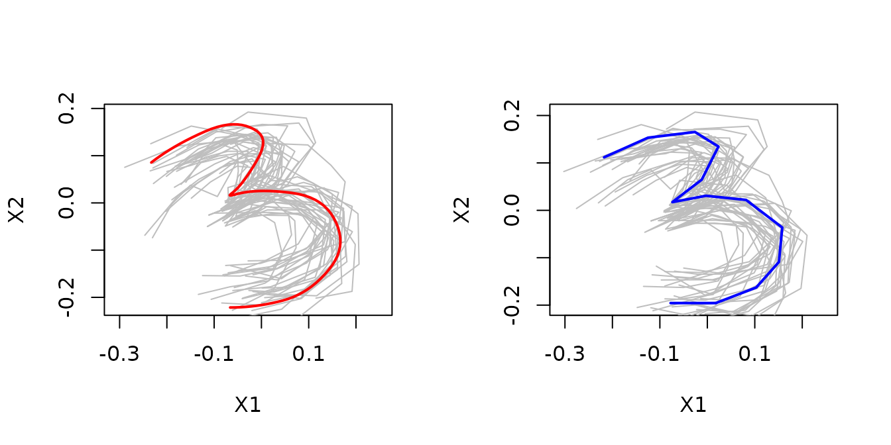

How to estimate elastic shape means with elastes
how-to.RmdThis vignette describes basic usage of elastes in R. elastes is a R package that provides functions for the computation of functional elastic shape means over sets of open planar curves. The package is particularly suitable for settings where these curves are only sparsely and irregularly observed. It uses a novel approach for elastic shape mean estimation, where planar curves are treated as complex functions and a full Procrustes mean is estimated from the corresponding smoothed Hermitian covariance surface. This is combined with the methods for elastic mean estimation proposed in Steyer, Stöcker, Greven (2021) <arXiv:2104.11039>. See Stöcker et. al. (2022) <arXiv:2203.10522> for details.
Installation
Like many other R packages, the simplest way to obtain elastes is to install it directly from CRAN. Type the following command in R console:
install.packages("elastes")Quick Start
The purpose of this section is to give users a general sense of the package. We will briefly go over the main functions, basic operations and outputs
Firstly, load up the elastes package.
We load a set of 30 sparse handwritten digit 3’s from the shapes package for illustration. You may have to install the shapes package first.
# install.packages("shapes")
library(shapes)
#> Warning in rgl.init(initValue, onlyNULL): RGL: unable to open X11 display
#> Warning: 'rgl.init' failed, running with 'rgl.useNULL = TRUE'.
data(digit3.dat)The data still has the form of a three dimensional array. We will have to convert it to a list of data.frames, where each data.frame corresponds to one curve.
digit3 <- apply(digit3.dat, MARGIN = 3, FUN = function(curve){
data.frame(X1 = curve[,1], X2 = curve[,2])
})We can compute a functional mean curve by calling compute_elastic_shape_mean using the specified set of knots and type of mean (polygonal or smooth).
knots <- seq(0, 1, length = 11)
mean_smooth <- compute_elastic_shape_mean(digit3, knots = seq(0, 1, length = 11), type = "smooth")
mean_poly <- compute_elastic_shape_mean(digit3, knots = seq(0, 1, length = 13), type = "polygon")Then we can plot the result. The call to plot.elastic_shape_mean shows the estimated mean function, together with the so called Procrustes fits - the centered and rotation plus scaling aligned data curves.

Additional parameters
The estimated mean is the leading eigenfunction of the smoothed Hermitian covariance surface of the data curves. In the covariance estimation, the used penalty can be controlled by the penalty parameter.
The method can control for different types of measurement-error variance along t, by setting the var_type parameter.
See also the documentation for more information.
help(compute_elastic_shape_mean)